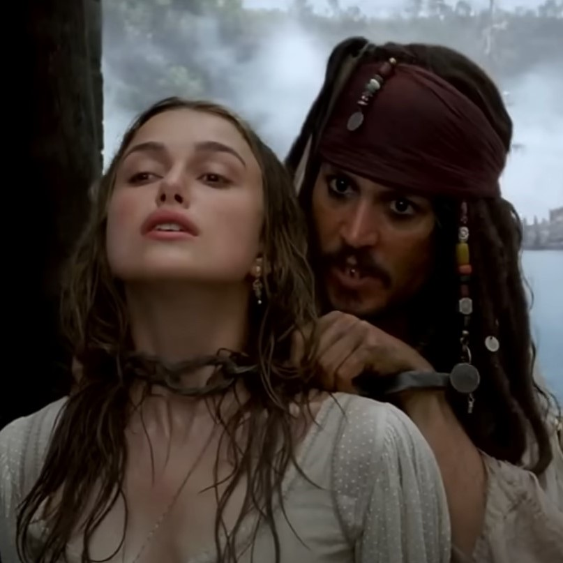
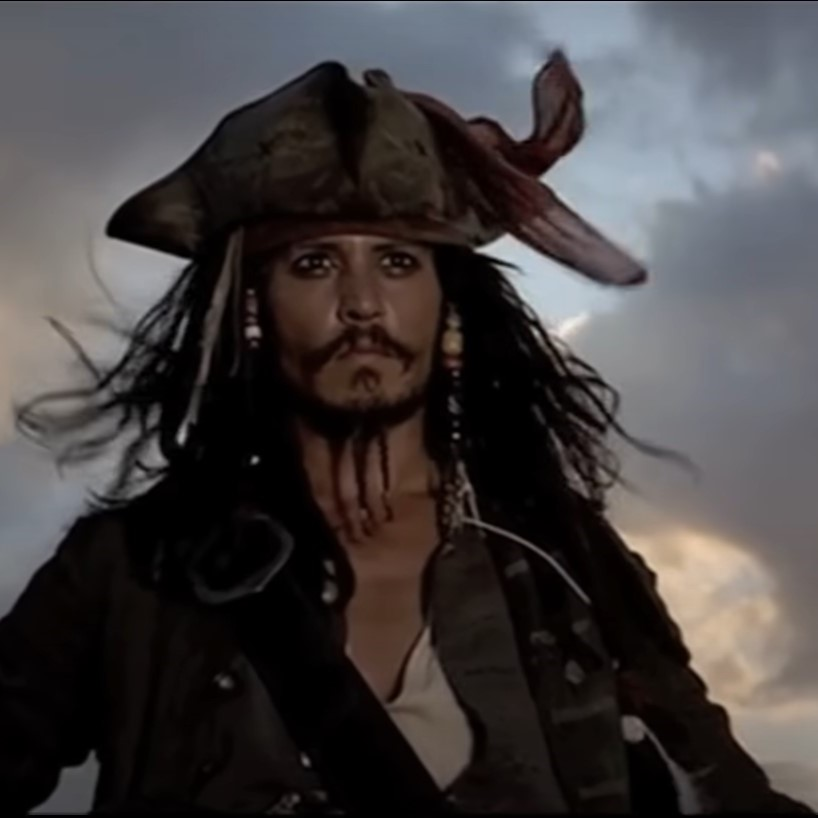

Soundtrack
Scoring by Klaus Badelt & Hans Zimmer
Composers

The music of Pirates of the Caribbean: Curse of the Black Pearl is credited to composers Klaus Badelt and Hans Zimmer. Originally Zimmer, at the time of production, was working on The Last Samurai, and thus declined the job. Instead, he recommended Klaus Badelt, an up-and-coming composer and member of Zimmer's film scoring company "Media Ventures." Zimmer and Badelt had also collaborated on several other scores such as The Prince of Egypt, Gladiator, and Mission: Impossible 2. Though Badelt took the lead on scoring the movie and is officially credited as the composer, Zimmer became entranced by the movie after an evening with director Gore Verbinski and ended up writing several of the movie's primary musical themes - over the course of the following night.
Themes
The movie soundtrack has several main "themes" that accompany key points of the movie are are repeated throughout. These are called "leitmotifs," and are often associated with certain characters, places, objects (like the Black Pearl), or emotions. Examples in Curse of the Black Pearl include Jack Sparrow, Davy Jones, the "love" theme, the "swashbuckling" theme, and the "main" theme.
Notable Tracks
"Fog Bound"

This track utilizes breathy woodwinds and sul pont bowing on the strings to create a sinister, ghostly sound used to denote the Black Pearl and her cursed crew. It then leads into the movie's main "love theme," identified by the swelling of horns and strings.
Listen here"The Black Pearl"
This track is a great example of many of the movie's themes, and is played as Jack makes his escape from Port Royal. The "swashbuckling" theme can be heard at 00:52 as he releases Elizabeth and makes his escape. The upbeat, driving tune is composed of punctuated triplets and a simple melody that's doubled at the octave (the same notes played at a higher frequency) at 01:00, instantly brightening the music.As the guards begin shooting, the track continues into the "main" theme at 01:08, recognizable with its staccato (puncuated) eigth notes and triplets.
Listen here"The Medallion Calls"
This track, played during Jack Sparrow's first onscreen appearance in Curse of the Black Pearl, is a musical motif that can be heard during his appearance in each of the first three Pirates movies. It segues from the love theme we heard in "Fog Bound" into a driving snare beat and horn melody at 00:24. A mournful trumpet solo can also be heard at 01:05 when Jack removes his hat to honor the hanging skeletons he passes.
Listen here"He's a Pirate"

This track, played during the credits, is perhaps the most recognizable song on the soundtrack. It's been used as a background track to the Pirates theme park ride at Disneyland, the main menu of the Lego Pirates of the Caribbean video game, and as theme music for the Tampa Bay Buccaneers. This piece (and the entire soundtrack) is written for a full orchestra, and we can hear each of those instruments come together in this piece. He's a Pirate opens with a light, repetitive string section before leaping into a horn melody driven by heavy percussion (listen for the underlying snare beat and cymbal crashes). The melody is again picked up by the strings before we reach the "main" theme one last time at 00:59.
Listen here